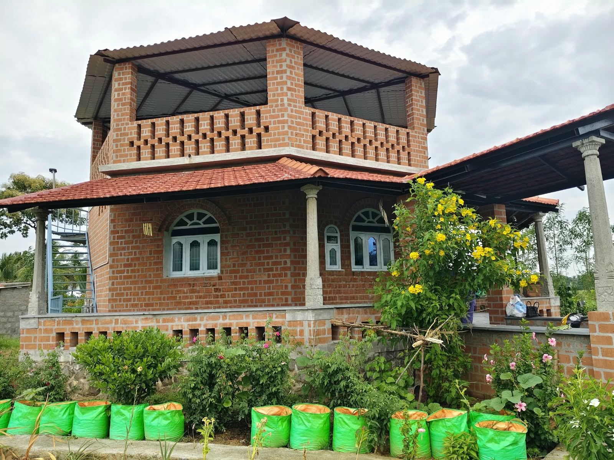
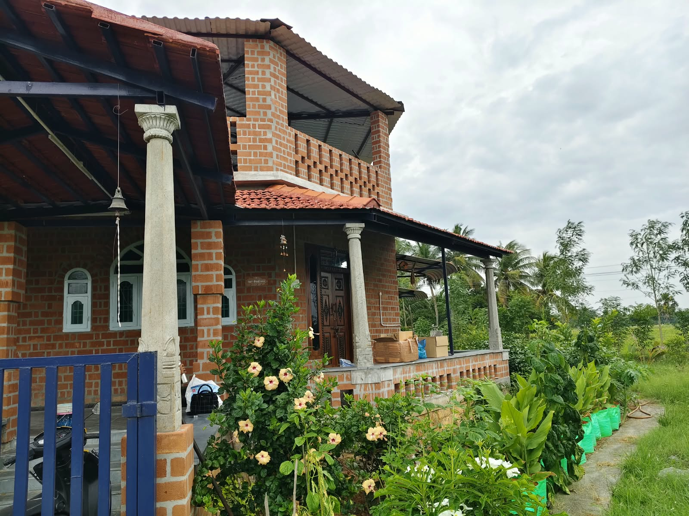

Welcome to
Joe's Nithilam
Escape the city. Breathe nature. Experience authentic farm life in the heart of Tamil Nadu.


About Us
Joe's Nithilam is a serene farmstay nestled in the lush countryside of Tamil Nadu, where every day feels like a rediscovery of nature.
Surrounded by paddy fields, small gardens, and a water pump, the farm immerses guests in genuine rural life. Wake up to birdsong, fresh nature walk, and fall asleep under a star-filled sky.
Whether you're a family seeking quality time, a couple looking for a romantic retreat, or a group craving an offbeat adventure — Joe's Nithilam is where busy city lives pause, and real life begins.
What We Offer
Everything guests need for a comfortable, worry-free stay at Joe's Nithilam.
1 private farmhouse · Sleeps 3–5 guests · Check-in 10 AM / Check-out 9 AM · Not a shared resort room
Food bought or arranged for you on request · Swiggy & Zomato also deliver to the farm
Free on-site parking for guests' vehicles within the farm premises
A secure, fenced farm boundary — safe for children to explore and play
Quiet Chola-period temples within 15 km — 👉 Click here for the full list!
Walajabad and its surrounding villages have a wealth of ancient temples, mostly from the Chola period (10th–13th centuries), many of which are quiet and less commercialized.
A small temple hidden among rice paddies, with its base dating to the 10th–11th century Chola period and its upper structure later rebuilt. Inside is a rare stucco relief on the arch depicting a cow performing abhisheka (ritual bathing) for Shiva with its milk, reflecting the local legend. The temple sits on the northward-flowing bank of the Palar River, considered by locals to be as sacred as Kashi.
A 12th–13th century Chola-period temple in the village of Thammanur, surrounded by paddy and sugarcane fields — a classic example of a village temple from the later Chola period.
A Shiva temple built in the 12th century by the Cholas, on the north bank of the Cheyyar River. The temple faces west; the main deity is a lingam form, and the goddess is housed in a separate shrine. Inside is also a Durga relief dating to the 12th century.
Said to have originally been built around the 12th–13th century and later renovated during the Vijayanagara-Nayaka period, with Telugu inscriptions remaining on the walls. Located on the bank of the Palar River, it is considered part of the "Pancha Kasi Kshetram" (five sacred sites of Kashi) in the region. The temple is small and usually quiet.
Also part of the local "Pancha Kasi Kshetram," said to be approximately 1000 years old. It houses a small lingam brought from Kashi, similar to the one at the Kashi Vishwanath Temple.
A village Amman temple in Uthukadu, close to the farm — a good short visit for guests wanting a quick glimpse of local temple worship without travelling far.
A Vishnu temple in the historic town of Uthiramerur, built across the Pallava and Chola eras and known for its inscriptions describing an early form of village self-governance through elected committees — one of the more significant heritage sites in the region.
A rock-cut cave temple from the Pallava period in Kuranganilmuttam, carved directly into the hillside — a quieter alternative to the more visited Pallava monuments closer to Chennai.
A few more stops close to the farm, on the way to or from Kanchipuram.
Visit authorized cooperative stores or traditional handloom workshops in Kanchipuram to buy authentic Kanchipuram silk sarees, woven in the traditional way the town is famous for.
A restored traditional Tamil heritage home in Kanchipuram, giving visitors a glimpse of how families lived generations ago — architecture, courtyards, and everyday rural life on display.
A village on the Palar River known for its ancient Vishnu temple, whose inscriptions record details of an attached hospital and Vedic school — a notable piece of Chola-era history.
One of India's oldest bird sanctuaries, home to migratory and native waterbirds — best visited in the winter migratory season.
A historic fort site, worth combining with a Vedanthangal visit as a longer day trip from the farm.
The village temples have small visitor numbers and irregular opening hours — visit in the morning (7:00–11:00) or evening (17:00–20:00) for the best chance of finding them open, and maintain a quiet, respectful demeanor.
Sit back and enjoy the peaceful farm atmosphere at your own pace.
Take a refreshing dip in our beautiful Pumpset and Tank — perfect for cooling off.
Music and sing-along evenings around the farm.
Nature drawing and coloring inspired by the farm's surroundings.
Curl up with a book in the garden, surrounded by greenery.
Simple yoga and stretching sessions in the open air.
Mindful breathing exercises surrounded by fresh farm air.
Spot native birds around the fields and gardens.
A dedicated photography corner to capture farm life and scenery.
Watch the sunset over the fields on evening visits.
Unwind on a garden swing under the trees.
Sow seeds, water plants, and harvest your own vegetables on a real working farm.
Explore scenic trails through paddy fields, and natural surroundings.
Gather around a crackling bonfire under the stars for storytelling, music, and unforgettable memories.
Far from city lights — experience a breathtaking night sky with thousands of visible stars.
A typical full-day visit — timings can be adjusted to fit your school's bus and bell schedule.
Welcome, headcount, and a quick safety briefing for students and chaperones.
A tractor ride around the paddy fields and gardens.
Students activity like:
A relaxed meal at the Farm House.
Tyre riding, traditional Tamil games, harvesting, or a nature trail depending on the season:
 Tyre Riding
Tyre Riding Pallanguzhi (பல்லாங்குழி) – counting & strategy game with seeds and a wooden board
Pallanguzhi (பல்லாங்குழி) – counting & strategy game with seeds and a wooden board Sottanguli / Five Stones (சொட்டாங்குளி) – tossing and catching five small stones
Sottanguli / Five Stones (சொட்டாங்குளி) – tossing and catching five small stones Paramapadam (பரமபதம்) – traditional snakes and ladders
Paramapadam (பரமபதம்) – traditional snakes and ladders Nondi (நொண்டி) – hopscotch played by hopping on one foot
Nondi (நொண்டி) – hopscotch played by hopping on one foot Kitti Pul (கிட்டிப்புள்) – stick-and-peg game, similar to gilli-danda
Kitti Pul (கிட்டிப்புள்) – stick-and-peg game, similar to gilli-danda Uriyadi (உரியடி) – festival pot-breaking game
Uriyadi (உரியடி) – festival pot-breaking game Thaayam (தாயம்) – traditional dice and board game
Thaayam (தாயம்) – traditional dice and board game Aadu Puli Aattam (ஆடு புலி ஆட்டம்) – goats-versus-tigers strategy board game
Aadu Puli Aattam (ஆடு புலி ஆட்டம்) – goats-versus-tigers strategy board game Kannaamoochi (கண்ணாமூச்சி) – hide-and-seek
Kannaamoochi (கண்ணாமூச்சி) – hide-and-seek Kokku Parakkudhu (கொக்கு பறக்குது) – a listening and reaction game
Kokku Parakkudhu (கொக்கு பறக்குது) – a listening and reaction game Pambaram (பம்பரம்) – spinning top game
Pambaram (பம்பரம்) – spinning top game Kayiru Izhuthal (கயிறு இழுத்தல்) – tug of war
Kayiru Izhuthal (கயிறு இழுத்தல்) – tug of warA light snack and refreshing drinks before the ride home.
Final headcount, souvenirs, and a safe send-off.
Create Memories
Our picturesque farm is the perfect setting for your most cherished celebrations, events, and retreats.
Celebrate your special day surrounded by nature, loved ones, and cake.
Learn moreRekindle romance in the most beautiful natural setting — tailored for couples.
Learn moreReunite the whole family in our spacious farmstay for an unforgettable experience.
Learn morePhoto Gallery



Guest Reviews
"An absolutely magical experience! We came with our kids and they had the time of their lives. The Pumpset — everything was perfect. We will definitely be back!"
"We celebrated our anniversary here and it was beyond all expectations.The farm is breathtakingly beautiful."
"Our friends team of 5 had an amazing offsite here. The farm activities were refreshing and unique. Everyone came back recharged and recharged. Highly, highly recommended!"
Joe's Nithilam is a farm stay and rural farm experience in Puthagaram, Wallajabad, Kanchipuram district, Tamil Nadu. Guests can experience farming, nature walks, traditional games, outdoor activities, stargazing, bonfires, and a peaceful countryside environment.
Joe's Nithilam is located at Puthagaram, Wallajabad, Kanchipuram district, Tamil Nadu — approximately 50 km from Chennai and around 1 to 1.10 hours by road, depending on traffic. We share the exact Google Maps location upon booking.
Check-in is at 10:00 AM and check-out is at 09:00 AM. Early check-in or late check-out can be arranged on request, subject to availability.
We have 1 farmhouse that can comfortably accommodate up to 3-5 guests. For smaller groups or special events, please contact us for custom arrangements.
We can buy or arrange food for you on request, and Swiggy and Zomato also deliver to the farm.
Guests can take part in farming activities, go on nature walks, enjoy the pumpset and tank, play outdoor and traditional Tamil games, watch the sunset, go bird watching, enjoy a bonfire, listen to music, relax in the garden, and stargaze.
Absolutely! Joe's Nithilam is a paradise for children. Kids love farming, nature walks, outdoor and traditional Tamil games, and the pumpset and tank (with adult supervision). Children below 5 years stay free.
Wi-Fi is currently not available at the farm — we encourage guests to disconnect and fully immerse in the farm experience for a proper digital detox. Mobile network coverage is fully available for most operators.
Cancellations 7+ days before check-in receive a full refund. Cancellations 3–7 days before receive a 50% refund. Cancellations within 3 days are non-refundable. Please contact us directly for special circumstances.
Reach Us
Joe's Nithilam Farm Stay,
Puthagaram, Wallajabad,
Kanchipuram District, Tamil Nadu
Fill in a few details and we'll receive it on WhatsApp in one message.